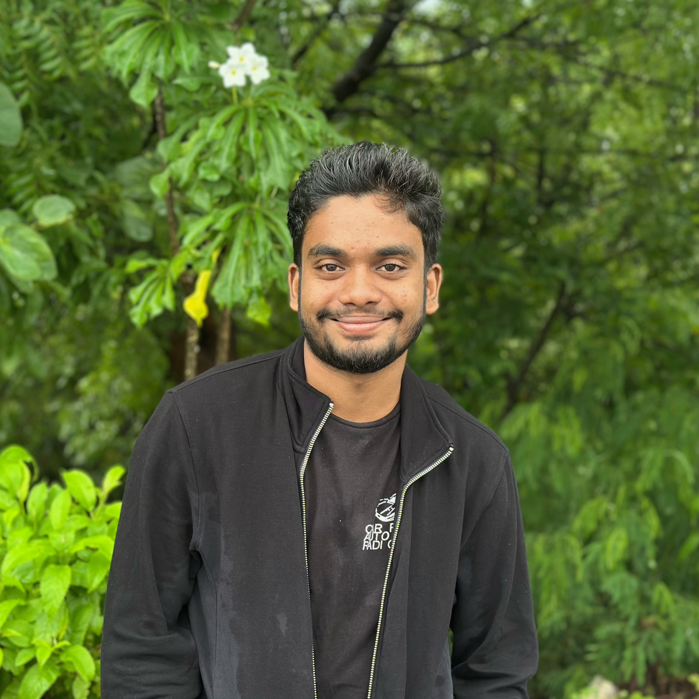

|
Srishanth Sriramula
I’m a software engineer and applied AI/ML developer focused on building scalable production-grade systems that combine strong backend engineering with real-world machine learning.
My work spans AI-powered food detection and nutrition estimation platforms, biometric verification systems, autonomous research agents, and Kaggle-style data science pipelines. I emphasize clean system design, deployment, and end-to-end performance — not just model accuracy.
Email /
CV /
Bio /
Github /
Kaggle
|

|
Research & Applied AI
I’m interested in applied machine learning, computer vision, backend systems, and large-scale AI pipelines. My work focuses on transforming ML models into real-world deployable systems with strong engineering foundations.
|
Competitions
Built end-to-end machine learning pipelines with strong emphasis on exploratory data analysis, feature engineering, model development, and evaluation on real-world large-scale datasets.
|
CSIRO Pasture Biomass Prediction Challenge
Kaggle Competition, 2025
Github
Built predictive machine learning models for pasture biomass estimation using environmental and temporal data collected across regions and seasons. Performed extensive exploratory data analysis, feature engineering from climate and contextual variables, and rigorous model evaluation to achieve robust performance on real-world noisy datasets.
Final ranking: 1087/3802
|
NFL Big Data Bowl – Player Movement Prediction
Kaggle Competition, 2025
Github
Designed spatiotemporal feature engineering pipelines and sequence models to predict player trajectories during pass plays. Analyzed large-scale player tracking data and modeled interactions between players to improve trajectory prediction accuracy.
Final ranking: 578/1899
|
|
Technical Skills
|
Backend & Systems
REST API development, authentication systems, database integration, cloud deployment (AWS, GCP), scalable architectures
AI / ML
Computer vision (food detection, segmentation, biometric verification), deep learning with PyTorch, LLM-based systems, autonomous agents
Data Science
Exploratory data analysis (EDA), feature engineering, model evaluation and optimization
|
|
Education
|
B.Tech in Computer Science
Keshav Memorial Institute of Technology, Hyderabad (2023 – 2027)
CGPA: 8.1 / 10
Intermediate
Sri Chaitanya Junior College, Hyderabad (2021 – 2023)
Grade: 92%
Schooling
Alphores High School, Karimnagar (2021)
Grade: 10 / 10
|
|
{kind=link}